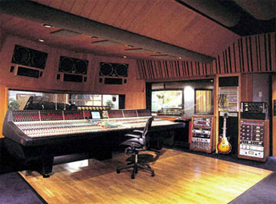

THE SPIRAL CEILING
Storyk explains in the Frame By Frame article that the industry only started to develop reliable technology that could predict acoustic behaviour in a particular space by the late 20th century, and even that was only for the frequencies above the Schroeder frequency, and not for low end. So how has studio design and acoustic science developed over the years?
“Well, of course we kept getting smarter every year,” says Storyk, “and the knowledge has increased. There has always been architecture, acoustics and audio, and there’s also the art of building a studio. In all this, there’s a fundamental agreement that rooms basically need to be acoustically neutral. So over the years there’s been a process of intuition, guessing, measurements, using your ears, and then you improve with the next studio you build, to achieve this aim.”
“You have to remember that all the great cathedrals we know today are the ones that did not fall down. Half of the cathedrals that were built collapsed. People learned from their mistakes, and got better. In our case, some studios we made did not work, so we made them better next time. One general mistake in studio design is making control rooms too dead, possibly making them non-musical. And for years, people, myself included, were designing what became known as compression ceilings.”
“You put the speakers up high, encapsulate everything in wood and hard baffling, and then you have the ceiling come down, also in wood. The result was that you got 3 to 6dB more gain in the room. It was a very clever way of getting extra low frequencies, which was good news. The bad news was that you got horrible comb filter reflections from the horns in the listening position. For years people did this, even while knowing it wasn’t sounding good. This was in the late seventies and early eighties.”

COMPRESSION CEILINGS
“Then, all of a sudden, half a dozen people realized that the compression ceiling design concept was wrong. What should really happen is an expansion ceiling, and it should be baffled and soft in the front, and probably be diffusive in the back. From that idea somebody one day came up with the live end, dead end concept, and gave it an acronym, LEDE.”
“When LEDE came along in the early eighties, it became popular because it was an easy acronym to grasp. It was the same with the importance of reverb time. Other concepts emerged as well, like the reflection-free zone, initial time delay gap [ITDG], and more. Nobody ever said small, critical listening rooms were easy to design!”
“Although everybody jumped onto the LEDE concept in the eighties, I always thought that it should be called FDLEDE, which means Frequency Dependent Live End Dead End. LEDE is only for certain frequencies. People say things like, ‘the reverb time of my room is 0.3s.’ However, that means nothing. You have to know for what frequency it is 0.3s. You need to know the reverb time over the entire frequency range.”
“Moreover, the reflection-free zone idea states that in the listening position there’s no energy arriving in the first 15ms that’s within 10dB of the direct sound. That’s an aim that’s not so easy to achieve, and led to new developments in acoustic design.”
“More recently, two important trends have impacted studio design. One is that people have become more and more interested in low-frequency content. It’s to do with hip-hop and urban music. Our musical interest in low end in 2022 is not the same as it was in 1950. Just listen to a Buddy Holly record!”
DIFFERENT SOUNDS
YOUNG GURU / BUDDY HOLLY
“The other is that studios are getting smaller. Real estate is expensive, and most people are mixing on smaller consoles, or not on a console at all. More and more studios are private, because the great era of commercial studios has stopped growing. Chris Stone, who founded The Record Plant, predicted over 20 years ago that there would be motherships and satellite studios. He said that there would always be a handful of large iconic studios, and thousands and thousands of smaller studios, privately owned and producer-oriented. It’s exactly what has happened.”
“For the studio design community it means that we are busier than ever before, but it also poses challenges. These smaller studios, now paying more and more attention to low-frequency information and accuracy, are harder to design. As counter-intuitive as this might seem, the science bears this out.”
“The Schroeder frequency gets higher as rooms become smaller, so there’s a larger low frequency range that’s problematic to predict. The combination of stronger interest in low end, and rooms getting smaller, has created a perfect storm for us. It was another reason why we developed the NIRO software, to try to predict how the low end behaves.”